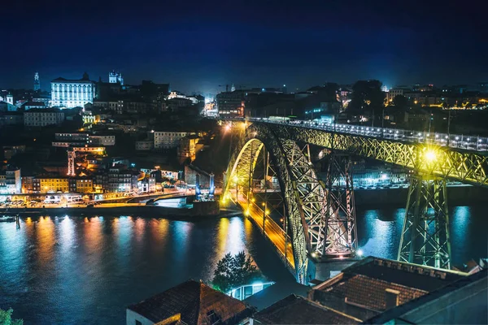

 
Informações
| Demografia | População | 231.962 hab |
|---|---|---|
| Densidade Populacional | 5.600 hab/km² | |
| Geografia | Área | 41,42 km² |
| Região | Norte | |
| País | Portugal | |
| Website | www.cm-porto.pt | |
Curisidades
- O Porto é conhecido como a "Cidade Invicta" devido à sua resistência durante o período das invasões napoleônicas. A cidade não foi conquistada pelos franceses durante essa época.
- O Porto é famoso pela sua arquitetura de pontes. A mais conhecida é a Ponte Dom Luís I, projetada pelo engenheiro Théophile Seyrig, que trabalhou com Gustave Eiffel. A ponte é uma das maiores do tipo em ferro do mundo.
- O Porto é o lar das famosas caves de vinho do Porto, localizadas na margem oposta do rio Douro, em Vila Nova de Gaia. Este vinho fortificado é produzido exclusivamente na região e é um dos maiores exportadores de vinho do mundo.
- O bairro da Ribeira é um dos mais antigos e pitorescos da cidade. As suas ruas estreitas e casas coloridas são um Patrimônio Mundial da UNESCO.
- Considerada uma das mais belas do mundo, a Livraria Lello é famosa pela sua arquitetura neogótica e pela escadaria impressionante. Diz-se que inspirou J.K. Rowling na criação do mundo de Harry Potter.